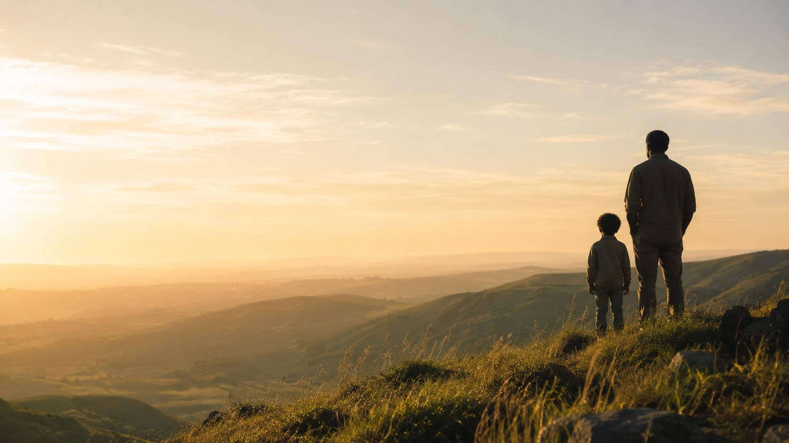

Whole-person wellness for the whole family, built on movement, nature, and real connection, in a world that forgot all three.
Kids today move less, connect less, and spend less time outside. Wild Wanderers is the other way. Bodies in motion, families in nature, real connection in a distracted age. This is wellness you do together, outdoors, and it is open to the whole family.
Our first trail is a boys' program built on movement, nature, and the kind of brotherhood that makes a kid brave. Out on the Baylands, every week, with the dads right beside them.
Notice one true thing. A bird, a track, the turning tide, a feeling moving through the body.
Settle with animal breath. Heron tall, lizard long. Calm is a skill, and it can be practiced.
Run, climb, build, wander. The body leads and the curriculum stays quietly in the background.
Sit, share, journal. Meaning is found in the looking back, not handed down in a lesson.
Stand tall, breathe slow. Patience and self-control, learned at the water's edge.
See the whole valley. Awareness, observation, the wider picture others miss.
Plans change, we adjust. Problem solving, resilience, a quick and creative mind.
Healthy risk, real responsibility. The inner strength to do the hard, good thing.
Whole-family wellness starts with our boys' program, out on the Baylands. Spots are limited each season.
Find a place this season